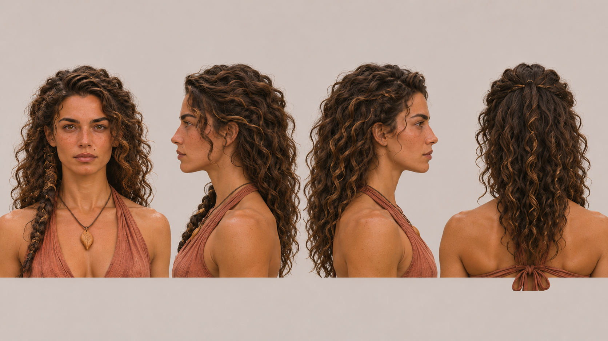
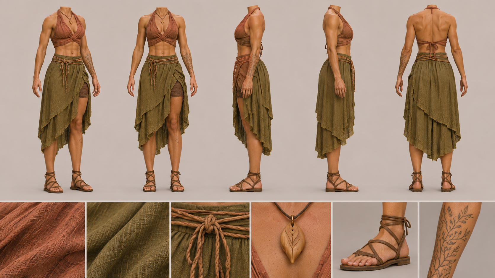
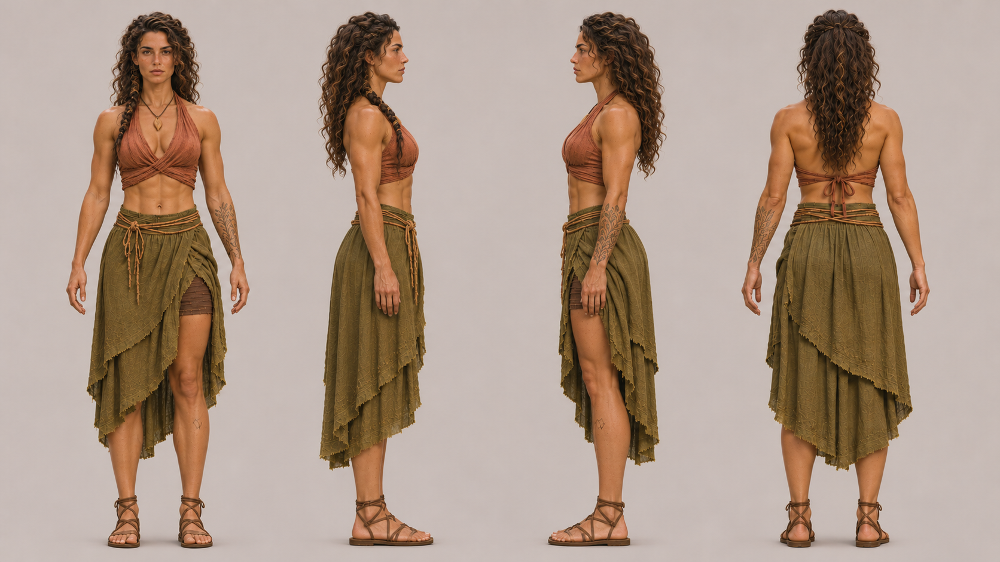
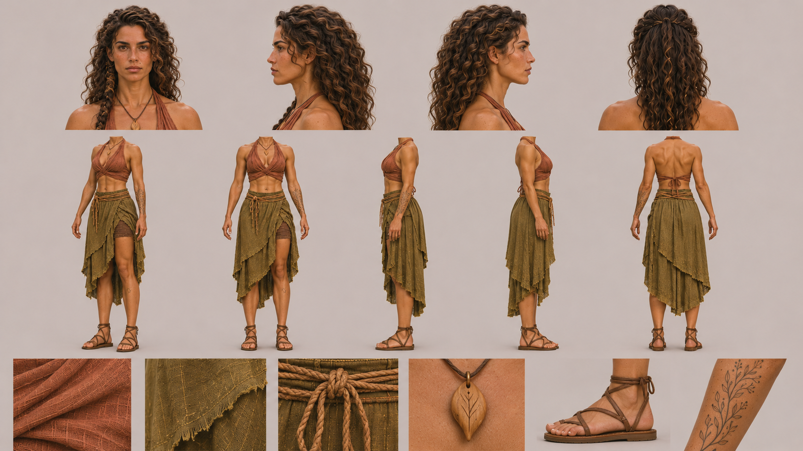
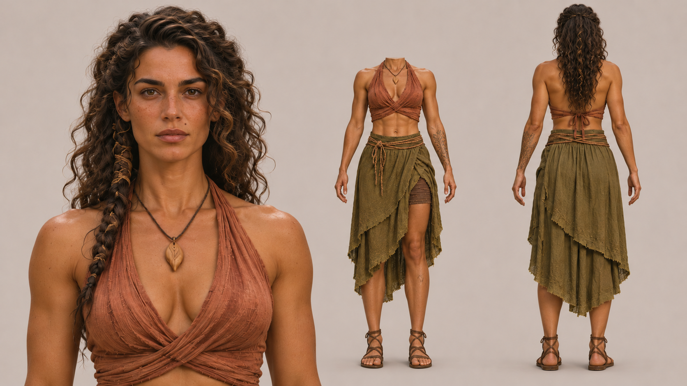
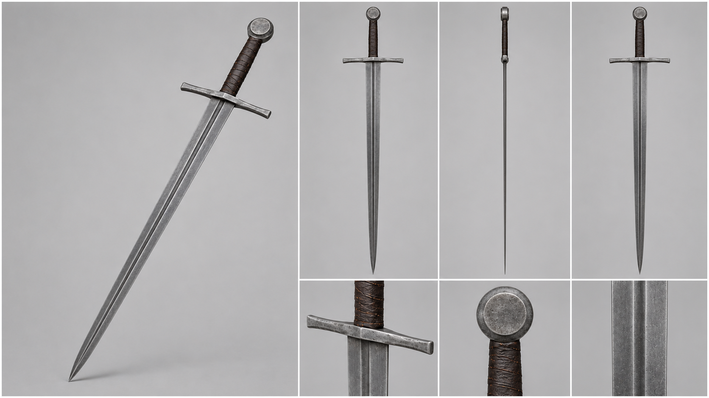
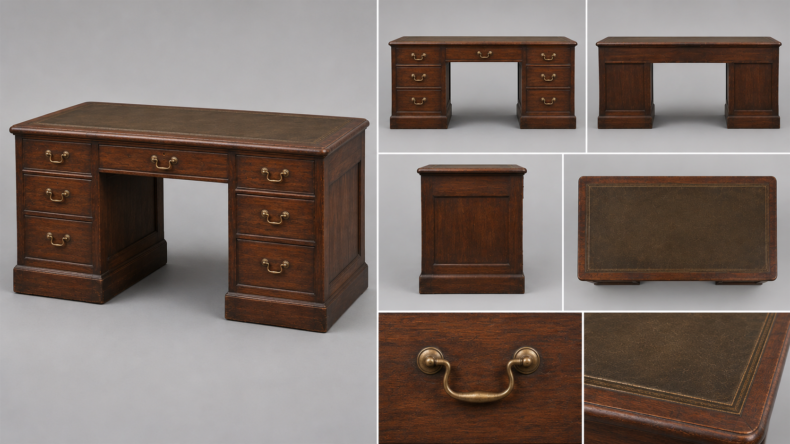
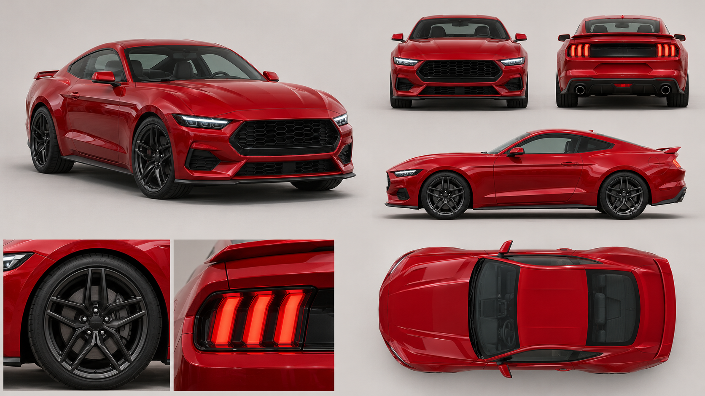

Elige un tipo. Después puedes pedir solo el prompt, solo la imagen o ambos. Los ejemplos muestran el formato; tu sujeto se adapta a la plantilla.

Crear una ficha de referencia visual de [SUJETO], estilo [ESTILO], horizontal 16:9, fondo gris claro uniforme y luz de estudio suave y neutra. Sin texto, etiquetas, números, flechas, logotipos añadidos ni marcas de agua. REFERENCIAS: [ASIGNAR A CADA ADJUNTO SU FUNCIÓN REAL: IDENTIDAD, VESTUARIO, DISEÑO, MATERIALES]. Si no hay referencia, diseñar a partir de [DESCRIPCIÓN]. Conservar lo aprobado; corregir errores anatómicos o texturas defectuosas sin cambiar la identidad. Reconstruir partes ocultas de forma conservadora y coherente. DISEÑO: [PROPORCIONES, COLORES, MATERIALES, ROPA O PIEZAS, MARCAS Y LATERALIDAD]. El ejemplo del catálogo define la distribución de la hoja, no impone su personaje, objeto o estilo. COMPOSICIÓN: Cuatro vistas de la cabeza y los hombros: frontal, perfil anatómico izquierdo, perfil anatómico derecho y posterior, en una fila. Igual escala de cabeza y altura de ojos; expresión neutra. Conservar identidad, edad, ojos, cabello, orejas y marcas en su lado anatómico. CONTINUIDAD: todas las vistas representan el mismo sujeto y estado. Mantener geometría y detalles. La derecha e izquierda pertenecen al sujeto, no al espectador. Perspectiva mínima en elevaciones y perfiles; perspectiva natural en tres cuartos. Detalles ampliados separados y vistas completas sin solaparse. Las ampliaciones no comparten necesariamente la escala de las vistas generales. Evitar cambios de identidad o diseño, partes duplicadas, lados reflejados, piezas que aparecen o desaparecen y texturas incoherentes. Adaptar anatomía y acabado al sujeto y estilo solicitados.

Crear una ficha de referencia visual de [SUJETO], estilo [ESTILO], horizontal 16:9, fondo gris claro uniforme y luz de estudio suave y neutra. Sin texto, etiquetas, números, flechas, logotipos añadidos ni marcas de agua. REFERENCIAS: [ASIGNAR A CADA ADJUNTO SU FUNCIÓN REAL: IDENTIDAD, VESTUARIO, DISEÑO, MATERIALES]. Si no hay referencia, diseñar a partir de [DESCRIPCIÓN]. Conservar lo aprobado; corregir errores anatómicos o texturas defectuosas sin cambiar la identidad. Reconstruir partes ocultas de forma conservadora y coherente. DISEÑO: [PROPORCIONES, COLORES, MATERIALES, ROPA O PIEZAS, MARCAS Y LATERALIDAD]. El ejemplo del catálogo define la distribución de la hoja, no impone su personaje, objeto o estilo. COMPOSICIÓN: Fila principal con cinco vistas del cuerpo sin cabeza: tres cuartos, frontal, perfil izquierdo, perfil derecho y posterior. Misma escala anatómica y suelas alineadas. Omitir solo la cabeza sin ampliar el cuerpo; no representar heridas. Fila inferior con detalles relevantes de tejidos, cierres, accesorios, calzado y marcas. Conservar costuras, capas, caída de la ropa y lateralidad. CONTINUIDAD: todas las vistas representan el mismo sujeto y estado. Mantener geometría y detalles. La derecha e izquierda pertenecen al sujeto, no al espectador. Perspectiva mínima en elevaciones y perfiles; perspectiva natural en tres cuartos. Detalles ampliados separados y vistas completas sin solaparse. Las ampliaciones no comparten necesariamente la escala de las vistas generales. Evitar cambios de identidad o diseño, partes duplicadas, lados reflejados, piezas que aparecen o desaparecen y texturas incoherentes. Adaptar anatomía y acabado al sujeto y estilo solicitados.

Crear una ficha de referencia visual de [SUJETO], estilo [ESTILO], horizontal 16:9, fondo gris claro uniforme y luz de estudio suave y neutra. Sin texto, etiquetas, números, flechas, logotipos añadidos ni marcas de agua. REFERENCIAS: [ASIGNAR A CADA ADJUNTO SU FUNCIÓN REAL: IDENTIDAD, VESTUARIO, DISEÑO, MATERIALES]. Si no hay referencia, diseñar a partir de [DESCRIPCIÓN]. Conservar lo aprobado; corregir errores anatómicos o texturas defectuosas sin cambiar la identidad. Reconstruir partes ocultas de forma conservadora y coherente. DISEÑO: [PROPORCIONES, COLORES, MATERIALES, ROPA O PIEZAS, MARCAS Y LATERALIDAD]. El ejemplo del catálogo define la distribución de la hoja, no impone su personaje, objeto o estilo. COMPOSICIÓN: Cuatro figuras completas, de cabeza a pies: frontal, perfil izquierdo, perfil derecho y posterior. Misma escala corporal y suelas alineadas. Postura neutra, brazos ligeramente separados para leer la silueta, manos y calzado completos. Identidad y vestuario idénticos en todas las vistas. CONTINUIDAD: todas las vistas representan el mismo sujeto y estado. Mantener geometría y detalles. La derecha e izquierda pertenecen al sujeto, no al espectador. Perspectiva mínima en elevaciones y perfiles; perspectiva natural en tres cuartos. Detalles ampliados separados y vistas completas sin solaparse. Las ampliaciones no comparten necesariamente la escala de las vistas generales. Evitar cambios de identidad o diseño, partes duplicadas, lados reflejados, piezas que aparecen o desaparecen y texturas incoherentes. Adaptar anatomía y acabado al sujeto y estilo solicitados.

Crear una ficha de referencia visual de [SUJETO], estilo [ESTILO], horizontal 16:9, fondo gris claro uniforme y luz de estudio suave y neutra. Sin texto, etiquetas, números, flechas, logotipos añadidos ni marcas de agua. REFERENCIAS: [ASIGNAR A CADA ADJUNTO SU FUNCIÓN REAL: IDENTIDAD, VESTUARIO, DISEÑO, MATERIALES]. Si no hay referencia, diseñar a partir de [DESCRIPCIÓN]. Conservar lo aprobado; corregir errores anatómicos o texturas defectuosas sin cambiar la identidad. Reconstruir partes ocultas de forma conservadora y coherente. DISEÑO: [PROPORCIONES, COLORES, MATERIALES, ROPA O PIEZAS, MARCAS Y LATERALIDAD]. El ejemplo del catálogo define la distribución de la hoja, no impone su personaje, objeto o estilo. COMPOSICIÓN: Tres filas legibles: arriba cuatro retratos (frontal, perfiles izquierdo y derecho y posterior); centro cinco cuerpos sin cabeza (tres cuartos, frontal, perfiles izquierdo y derecho y posterior); abajo detalles de materiales, accesorios, calzado y marcas relevantes. Igual escala entre vistas del mismo grupo, con ampliaciones independientes para detalles. Conservar identidad, anatomía, ropa y lateralidad. CONTINUIDAD: todas las vistas representan el mismo sujeto y estado. Mantener geometría y detalles. La derecha e izquierda pertenecen al sujeto, no al espectador. Perspectiva mínima en elevaciones y perfiles; perspectiva natural en tres cuartos. Detalles ampliados separados y vistas completas sin solaparse. Las ampliaciones no comparten necesariamente la escala de las vistas generales. Evitar cambios de identidad o diseño, partes duplicadas, lados reflejados, piezas que aparecen o desaparecen y texturas incoherentes. Adaptar anatomía y acabado al sujeto y estilo solicitados.

Crear una ficha de referencia visual de [SUJETO], estilo [ESTILO], horizontal 16:9, fondo gris claro uniforme y luz de estudio suave y neutra. Sin texto, etiquetas, números, flechas, logotipos añadidos ni marcas de agua. REFERENCIAS: [ASIGNAR A CADA ADJUNTO SU FUNCIÓN REAL: IDENTIDAD, VESTUARIO, DISEÑO, MATERIALES]. Si no hay referencia, diseñar a partir de [DESCRIPCIÓN]. Conservar lo aprobado; corregir errores anatómicos o texturas defectuosas sin cambiar la identidad. Reconstruir partes ocultas de forma conservadora y coherente. DISEÑO: [PROPORCIONES, COLORES, MATERIALES, ROPA O PIEZAS, MARCAS Y LATERALIDAD]. El ejemplo del catálogo define la distribución de la hoja, no impone su personaje, objeto o estilo. COMPOSICIÓN: Tres columnas: retrato frontal grande a la izquierda, cuerpo frontal sin cabeza en el centro, cuerpo posterior completo a la derecha. Construir las dos figuras corporales completas a EXACTAMENTE la misma escala: hombros, cintura, caderas, rodillas y suelas alineados. Omitir únicamente la cabeza frontal y dejar vacío su espacio. Nunca ampliar el cuerpo frontal para llenar la columna. El retrato es una ampliación independiente. Misma identidad, ropa y marcas. CONTINUIDAD: todas las vistas representan el mismo sujeto y estado. Mantener geometría y detalles. La derecha e izquierda pertenecen al sujeto, no al espectador. Perspectiva mínima en elevaciones y perfiles; perspectiva natural en tres cuartos. Detalles ampliados separados y vistas completas sin solaparse. Las ampliaciones no comparten necesariamente la escala de las vistas generales. Evitar cambios de identidad o diseño, partes duplicadas, lados reflejados, piezas que aparecen o desaparecen y texturas incoherentes. Adaptar anatomía y acabado al sujeto y estilo solicitados.

Crear una ficha de referencia visual de [SUJETO], estilo [ESTILO], horizontal 16:9, fondo gris claro uniforme y luz de estudio suave y neutra. Sin texto, etiquetas, números, flechas, logotipos añadidos ni marcas de agua. REFERENCIAS: [ASIGNAR A CADA ADJUNTO SU FUNCIÓN REAL: IDENTIDAD, VESTUARIO, DISEÑO, MATERIALES]. Si no hay referencia, diseñar a partir de [DESCRIPCIÓN]. Conservar lo aprobado; corregir errores anatómicos o texturas defectuosas sin cambiar la identidad. Reconstruir partes ocultas de forma conservadora y coherente. DISEÑO: [PROPORCIONES, COLORES, MATERIALES, ROPA O PIEZAS, MARCAS Y LATERALIDAD]. El ejemplo del catálogo define la distribución de la hoja, no impone su personaje, objeto o estilo. COMPOSICIÓN: Vista principal grande en tres cuartos a la izquierda. A la derecha, vistas frontal, de canto y posterior a igual escala. Abajo, detalles de empuñadura, pomo y hoja. Conservar longitud de hoja, filo, guarda, agarre y remaches. Las mellas, si existen, permanecen en el mismo filo y posición física; no inventarlas ni duplicarlas. CONTINUIDAD: todas las vistas representan el mismo sujeto y estado. Mantener geometría y detalles. La derecha e izquierda pertenecen al sujeto, no al espectador. Perspectiva mínima en elevaciones y perfiles; perspectiva natural en tres cuartos. Detalles ampliados separados y vistas completas sin solaparse. Las ampliaciones no comparten necesariamente la escala de las vistas generales. Evitar cambios de identidad o diseño, partes duplicadas, lados reflejados, piezas que aparecen o desaparecen y texturas incoherentes. Adaptar anatomía y acabado al sujeto y estilo solicitados.

Crear una ficha de referencia visual de [SUJETO], estilo [ESTILO], horizontal 16:9, fondo gris claro uniforme y luz de estudio suave y neutra. Sin texto, etiquetas, números, flechas, logotipos añadidos ni marcas de agua. REFERENCIAS: [ASIGNAR A CADA ADJUNTO SU FUNCIÓN REAL: IDENTIDAD, VESTUARIO, DISEÑO, MATERIALES]. Si no hay referencia, diseñar a partir de [DESCRIPCIÓN]. Conservar lo aprobado; corregir errores anatómicos o texturas defectuosas sin cambiar la identidad. Reconstruir partes ocultas de forma conservadora y coherente. DISEÑO: [PROPORCIONES, COLORES, MATERIALES, ROPA O PIEZAS, MARCAS Y LATERALIDAD]. El ejemplo del catálogo define la distribución de la hoja, no impone su personaje, objeto o estilo. COMPOSICIÓN: Vista principal en tres cuartos a la izquierda; frontal, posterior, lateral y superior a la derecha, con detalles de tirador y material abajo. Misma escala entre elevaciones comparables; la vista principal y los detalles pueden ser mayores. Fijar número y posición de cajones, puertas, patas y tiradores. Todas las piezas móviles en el mismo estado. Si se necesita un interior abierto, crear una hoja aparte con idéntica estructura. CONTINUIDAD: todas las vistas representan el mismo sujeto y estado. Mantener geometría y detalles. La derecha e izquierda pertenecen al sujeto, no al espectador. Perspectiva mínima en elevaciones y perfiles; perspectiva natural en tres cuartos. Detalles ampliados separados y vistas completas sin solaparse. Las ampliaciones no comparten necesariamente la escala de las vistas generales. Evitar cambios de identidad o diseño, partes duplicadas, lados reflejados, piezas que aparecen o desaparecen y texturas incoherentes. Adaptar anatomía y acabado al sujeto y estilo solicitados.

Crear una ficha de referencia visual de [SUJETO], estilo [ESTILO], horizontal 16:9, fondo gris claro uniforme y luz de estudio suave y neutra. Sin texto, etiquetas, números, flechas, logotipos añadidos ni marcas de agua. REFERENCIAS: [ASIGNAR A CADA ADJUNTO SU FUNCIÓN REAL: IDENTIDAD, VESTUARIO, DISEÑO, MATERIALES]. Si no hay referencia, diseñar a partir de [DESCRIPCIÓN]. Conservar lo aprobado; corregir errores anatómicos o texturas defectuosas sin cambiar la identidad. Reconstruir partes ocultas de forma conservadora y coherente. DISEÑO: [PROPORCIONES, COLORES, MATERIALES, ROPA O PIEZAS, MARCAS Y LATERALIDAD]. El ejemplo del catálogo define la distribución de la hoja, no impone su personaje, objeto o estilo. COMPOSICIÓN: Vista principal grande en tres cuartos a la izquierda. Arriba a la derecha frontal y posterior a igual escala; debajo perfil lateral y vista superior con la misma longitud representada. Abajo a la izquierda detalles de rueda y faro. Conservar carrocería, puertas, llantas, número de radios, luces, espejos, interior y posición del volante. No reflejar asimetrías como tapa de combustible. Añadir el otro lateral en una hoja complementaria si aporta información relevante. CONTINUIDAD: todas las vistas representan el mismo sujeto y estado. Mantener geometría y detalles. La derecha e izquierda pertenecen al sujeto, no al espectador. Perspectiva mínima en elevaciones y perfiles; perspectiva natural en tres cuartos. Detalles ampliados separados y vistas completas sin solaparse. Las ampliaciones no comparten necesariamente la escala de las vistas generales. Evitar cambios de identidad o diseño, partes duplicadas, lados reflejados, piezas que aparecen o desaparecen y texturas incoherentes. Adaptar anatomía y acabado al sujeto y estilo solicitados.